CARIBBEAN
ANITGUA and BARBUDA
Antigua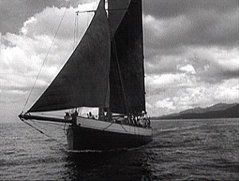
THE SAINT: The Old Treasure Story (Roger Moore, May/June 1965)
Rawl’s yacht sets out to Corda Cay.
(Identified by Philip Doyle, Sepember 2020)
English Harbour, Antigua
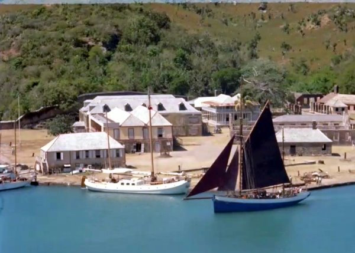
THE SAINT: The Old Treasure Story (Roger Moore, May/June 1965)
Antigua, and Barbuda: Duncan Rawl’s yacht waits at the dock for the other treasure hunters to arrive.
(Identified by Philip Doyle, Sepember 2020)
THE BAHAMAS
Bimini
Bimini Harbour
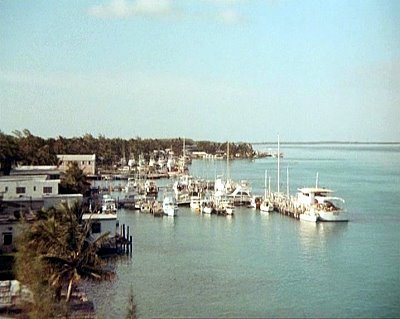
THE SAINT: The Effete Angler (Anthony Bushell: 1962)
Establishing shots of Bimini harbour.
DEPARTMENT S: The Bones of Byrom Blain (Paul Dickson: 1968)
Jason King is big game fishing out of Brown’s Marina, Bimini.
Central Andros
Fresh Creek Lighthouse

Establishing shots of Bimini harbour.
(Identified by Pierre Alfonsi, May 2023)
Nassau
Nassau Harbour

John Drake has been installed in a British Colony to investigate the methods and intentions of the nationalists led by Doctor Shargis.
(Identified by Sietse Postma, January 2024)
Montagu Beach Hotel

THE SAINT: The Effete Angler (Anthony Bushell: 1962)
Miami Beach, Florida
DANGER MAN: The Man on the Beach (Peter Yates: 1965)
The Royal Jamaican Hotel where Drake is working undercover.
Nassau Beach Hotel
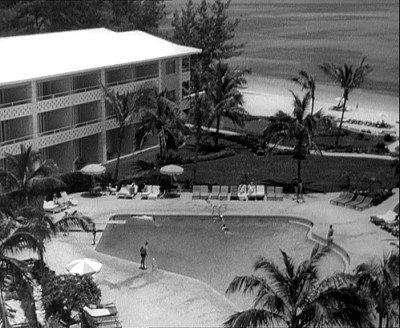
THE SAINT: The Effete Angler (Anthony Bushell: 1962)
Miami Beach, Florida (Nassau Beach Hotel, Cable Beach, redeveloped)
CUBA
Havana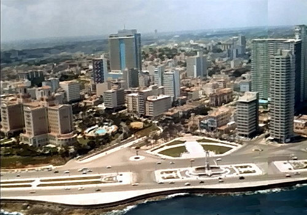
THE CHAMPIONS: Get Me Out of Here! (John Moxey: June 1967)
Establishing shot of the island of San Dios
GRENADA, Lesser Antilles
Carriacou and Petit Martinique
THE SAINT: The
Old Treasure Story (Roger
Moore, May/June 1965)
In the plane, Simon points out the West Indies to April Mallory.
DANGER MAN: The
Man on the Beach (Peter
Yates: 1965)
Establishing shots of Caribbean islands
DANGER MAN: Someone
is Liable to Get Hurt
(Michael Truman: 1965)
Drake is taken by helicopter to Fortiuato’s favourite haunts.
DANGER MAN: Shinda
Shima (Peter Yates:1965)
Drake is sent to the Island of Shinda Shima on the next stage of his
journey.
THE PRISONER: Many
Happy Returns (Patrick
McGoohan: March 1967)
The civil servant surveys various tropical islands from the jet trainer
before being severely let down by ‘Pinta Man’.
The aeroplane taking Steed and company to a party supposedly in the South of England, takes a dramatic detour and starts a decent towards an island far out at sea.
Saint Georges
THE CHAMPIONS: Get
Me Out of Here! (Cyril
Frankel: )
Richard Barrett, Sharron Mcready and Craig Sterling arrive in the San
Dios fishing village of Mustania with Professor Anna Maria Martes.
JAMAICA
The Municipal Market, Kingston
DANGER MAN: Parallel Lines Sometimes Meet (Don Chaffey: February 1965)
Drake reports to the World Travel offices in Port-au-Prince.
(Identified by Sietse Postma, February 2025)
Myrtle Bank Hotel, Kingston (Demolished)
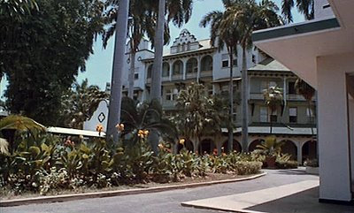
DANGER MAN: The Man on the Beach (Peter Yates: 1965)
Miss Key’s mansion where Drake is held whilst the arms deal is completed (World Backgrounds clip 1216).
THE SAINT: The Saint Bids Diamonds (Leslie Norman, April/May 1965)
Graner’s villa on Tenerife.
DANGER MAN: A Man to be Trusted (Peter Maxwell: June 1964)
Drake is taken by Mora To his home.
Film:
THE MUMMY’S SHROUD (1967)
Sheraton-Kingston Hotel, Knutsford Boulevard, Kingston

DEPARTMENT S: Black
Out (Ray Austin:
September
1968)
Stewart Sullivan Jason King and Annabelle Hurst travel to The
Bahamas on the trail of Sinclair.
Sans Souci Hotel, Ocho Rios

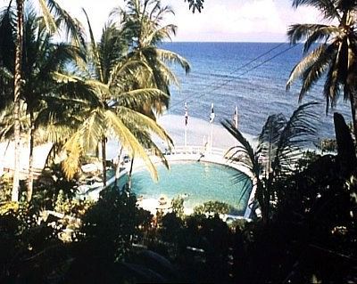
DEPARTMENT S: Black
Out (Ray Austin:
September
1968)
Having travelled to The Bahamas on the trail of Peter Sinclair, Stewart
Sullivan goes to Annabelle Hurst’s room and admires the view from the
hotel window. Later , we get another view of Jason's hotel.
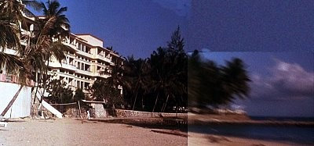
DEPARTMENT S: Black
Out (Ray Austin:
September
1968)
Wolfe
goes to persuade
Billy to keep Jason King occupied.
King Street, Kingston, Jamaica
THE CHAMPIONS: Reply
Box No. 666 (Cyril
Frankel: ???)
The adventure revolves around a “Greek speaking parrot” advertised in a
Jamaican newspaper advert.

DANGER MAN: A Man to be Trusted (Peter Maxwell: June 1964)
John Drake arrives at the Caribbean airport posing as a detective Superintendent Grant.
(Confirmed by Paul Stroud, March 2014)
DANGER MAN: A Date with Doris (Quentin Lawrence: 1964)
John Drake flies into Cuba posing as journalist John White.
(Confirmed by Paul Stroud, March 2014)
DANGER MAN: Parallel Lines Sometimes Meet (Don Chaffey: February 1965)
Drake flies in to Port-au-Prince.
Film:
WINGS TO JAMAICA (1960)
Spanish Town

DANGER MAN: The Mercenaries (Don Chaffey: 1964)
Stock shot to represent the African ‘Confederation’ and its neighbour (House of Assembly, Spanish Town).
(Identified by Geoff Dodd, January 2022)
PUERTO RICO
The Ponce Intercontinental Hotel, Ponce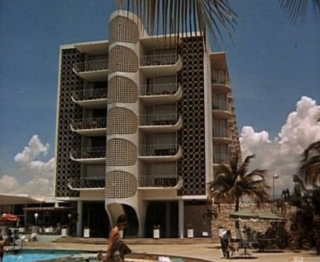
THE CHAMPIONS: Reply Box No. 666 (Cyril Frankel: ???)
Establishing shot of Jamaican hotel
(Identified by Geoff Dodd, July 2009)
San Juan
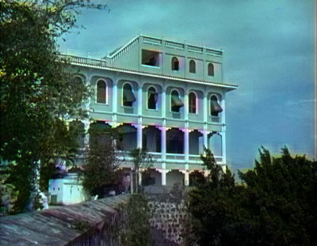
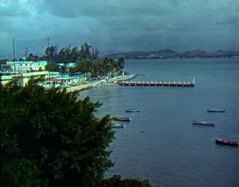
DANGER MAN: Two Birds with One Bullet (Peter Yates: 1965)
The Villa of Doctor Shargis. (World Backgrounds clip 310612, “Pan From Small Harbour Near San Juan, To Palatial Residence Overlooking The Sea, But Not In Frame.”)
El Morro Fort, San Juan
DANGER MAN: Someone is Liable to Get Hurt (Michael Truman: 1965)
Davis breaks into Morgan’s Layer to expose Fortiuato’s activities. Later Drake is taken as a prisoner to the fort.
International Airport Hotel, San Juan
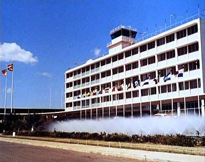
DEPARTMENT S: Blackout (Ray Austin: September 1968)
Wolfe watches as Jason King departs Nassau Airport for New York.
(Identified by Geoff Dodd, January 2022)
Luis Muñoz Marin International Airport, San Juan
DANGER MAN: English Lady Takes Lodgers (Michael Truman 1965)
Drake returns to Lisbon Airport with Emma Stanway and the rest of the gang.
(Identified by Stephan Thien, February 2009)
SAINT VINCENT and the GENADINES
Ashton Harbour, Union Island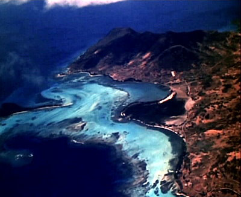
DANGER MAN: The
Man on the Beach (Peter
Yates: 1965)
Establishing shots of Caribbean islands
DANGER MAN: Someone
is Liable to Get Hurt
(Michael Truman: 1965)
Drake is taken by helicopter to Fortiuato’s favourite haunts.
DANGER MAN: Shinda
Shima (Peter Yates:1965)
Drake is sent to the Island of Shinda Shima on the next stage of his
journey.
THE PRISONER: Many
Happy Returns (Patrick
McGoohan: March 1967)
The civil servant surveys various tropical islands from the jet trainer
before being severely let down by ‘Pinta Man’.
TRINIDAD
Port of Spain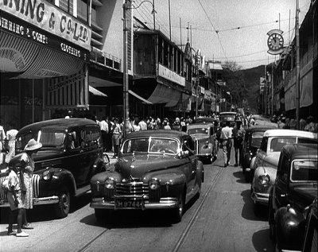

DANGER MAN: Parallel Lines Sometimes Meet (Don Caffey: February 1965)
Establishing footage as Drake reports to the World Travel offices in Port au Price, Haiti (Frederick Street, Port of Spain).
(Identified by Paul Stroud, June 2014)
US VIRGIN ISLANDS
ST. CROIX
Christainsted Harbour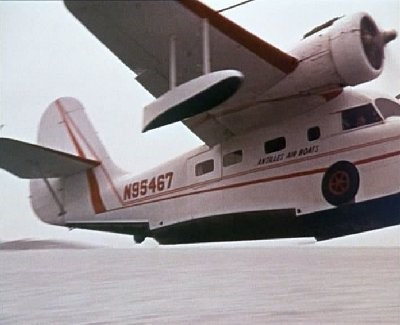
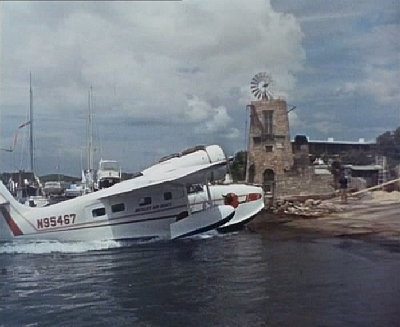
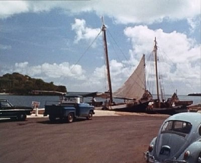
THE SAINT: Island
of Chance (Leslie
Norman: January 1967)
Simon
catches the plane to Charles Krayford’s Caribbean island and finds
photojournalist Marla Clayton is a fellow passenger (Christainsted
Harbour). Simon and Marla Clayton arrive by seaplane at Charles
Krayford’s
Caribbean island (Christainsted Harbour).

THE SAINT: Island
of Chance (Leslie
Norman: January 1967)
Simon and Marla travel to the site of the Martello tower.
(Identified by Pierre Alfonsi, May 2023)
THE SAINT: Island
of Chance (Leslie
Norman: January 1967)
Simon and Marla borrow the Jeep to visit the local town (World
Backgrounds 10773).
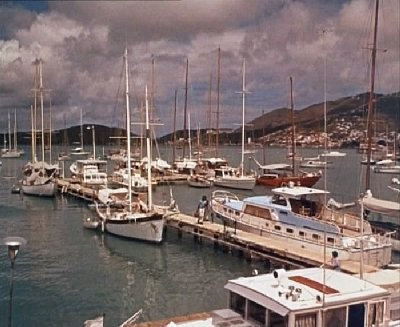
THE SAINT: The Old
Treasure Story (Roger
Moore, May/June 1965)
Simon Templar and April Mallory travel through a bustling West Indies
street to the docks (Main Street Charlotte Amalie, St. Thomas).
Establishing shot of street in British Colony (Main Street Charlotte Amalie, St. Thomas).
THE SAINT: Island
of Chance (Leslie
Norman:
January 1967)
Simon is drinking in a Caribbean club watching the entertainment (Stock
footage from The Jungle Club, Charlotte Amalie). Simon and Marla borrow
the Jeep to search the island, they start by the harbour (Charlotte
Amalie Harbour) and the next day drive along the coast road of Charles
Krayford’s Caribbean (road above Charlotte Amalie Harbour).
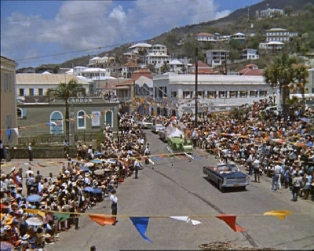
THE CHAMPIONS: The
Night People (Robert Asher:
June 1967)
Craig and Richard are working on a case in the Caribbean (stock footage
of carnival in main street Charlotte Amalie).
Return to Index